Monday 8th September As is becoming the norm, our holiday started with a trip to the hospital. This time it was for an 8:00 physio appointment at Basingstoke. Roz dropped me at the hospital and took the car back to Kingsclere before getting the bus back into Basingstoke. After my appointment, I got another bus and we met outside the station. At least this year, we were flying out together.
We got on the 9:30 London train, changed at Clapham Junction and were at Gatwick just before 11:00. We were flying on BA from South Terminal at 15:10 so had a few hours to kill. The beer selection at the land-side Wetherspoons was not great so we went through security and spent a couple of hours in the air-side one instead.
We headed for the gate at about 2:30 and were allowed to "pre-board" because of my leg. The flight was not full so we had three seats between us. We had a couple of glasses of wine on the flight and arrived in Kos on time at 21:00. We were bussed to the terminal but got through immigration quite quickly and were outside the terminal about 20 minutes after landing.
We were met outside by Myron, the owner of Miros Apartments, meaning we did not have to join a very long taxi queue with a complete lack of taxis. Things were going very smoothly at this point until Myron told us that his hotel had a double booking and he was taking us somewhere else for tonight. We were not too pleased with this news initially but it did not work out too badly.

Miros Apartments is about 1km outside the town of Tigaki and we were taken instead to Golden Sun which is much closer to the centre which was ideal for tonight. We dropped our bags in the room and by 10:00 were in Oneiro Taverna. We had half a litre of wine and a couple of bottles of retsina with a very enjoyable meal. We bought another couple of bottles to take away and drank one of them sat on our balcony before bed.
Tuesday 9th September We walked to the supermarket and bakery to buy things for breakfast and ate it on the balcony. Myron turned up again to collect us just after 11:00 and drove us to the apartments we were supposed to have been staying in. We had to wait half an hour or so for our room to be cleaned but once in, it was a very nice room with a balcony overlooking the pool.
After unpacking a few things, Roz went to the pool and I walked back into Tigaki. Although I had not been wearing my leg brace at home, this was the first time I had walked any distance without it. It was just under a mile into the centre along the beach and I managed it in both directions without any problems.
Back at the apartment, we had lunch on the balcony and then walked to the near-by supermarket to buy replacements for things we had forgotten (a hat for me and a towel for Roz) as well as wine and snacks for the evening. When we got back, I started on the exercises that I had been given yesterday before spending an hour or so by the pool.
We had a few drinks on the balcony before going out for the evening. England were playing Serbia tonight in Belgrade and we planned to eat and then try and find somewhere to watch the match. We walked back to Oneiro Taverna to eat and once again had very good meals. We watched the start of the game on my phone while finishing our drinks and then started walking along the main road where most of the bars and restaurants are.

There were plenty of places that were showing the game but none of them particularly appealed. We eventually gave up, walked back to the apartment and watched the second half on my phone while sat on our balcony.
Wednesday 10th September We did not do a lot this morning. Roz went to the pool for a couple of hours but I was quite happy staying in the room. We went for a walk into Tigaki at about 12:30. We had lunch at the bakery near Golden Sun and then stocked up on wine for the next few days. We both made it to the pool when we got back and I made it into the water for the first time.

We ate out at Oneiro Taverna for the third evening running but had a slightly earlier, more sober night than yesterday.
Thursday 11th September We were up by 9ish and I walked back to the bakery in Tigati to buy food for breakfast and lunch. The usually crowded beach looked a lot more pleasant at this time of day!

We checked out of the apartment at 10:30 and spent a couple of hours by the pool until it was time to depart. Myron drove us into Kos Town at 12:45 (€20) and we had an hour to wait for the 14:00 Dodekanisos Pride catamaran.
We saw Hoggy and Sarah on the upper deck as the boat came in about 20 minutes late. We both went up and said hello and then spent most of the rest of the journey in the air-con bit downstairs. We arrived in Arki about 40 minutes late at 17:20. The ferry was met at the port by a selection of vehicles and three of them took us up to Katsavidis Rooms where we were booked in for the next four nights.
This was the first time we had been to Arki and the first time Hoggy and Sarah had stayed on the island. We had bought quite a few things with us from Kos (mainly wine) as we knew that there was not a lot of options for shopping here. A visit to the near-by mini-mart confirmed that this was a good move. We were able to buy water but there was not too much else in the shop.

There was just enough room on our balcony for four chairs so we had a few drinks there before going out to eat. We walked down the hill to the harbour and found Trypas Taverna. This was an excellent place with reasonably priced wine and very good food in a lovely setting. We had our meals with a few litres of wine before walking back to the room.
Friday 12th September We were up by 9ish and had breakfast on the balcony. At 10:00 we headed off to the nearest beach, just round the corner from where the ferry had dropped us yesterday. I came back again at about 12:30 and we had lunch on the balcony when Roz returned an hour or so later.
We returned to the same beach for an hour or so in the afternoon.

The evening was a repeat of yesterday apart from the fact that we started drinking on Hoggy and Sarah's balcony and seemed to end up slightly more pissed. Excellent food again!
Saturday 13th September We had breakfast on the balcony and then walked to Tiganakia Beach. This was a 30 minute walk away but was a bit nicer than where we were yesterday. After an hour or so in the sun, we walked back again.
The others went back to yesterday's beach in the afternoon. I had had enough sun for today so went for another short walk instead. We were back in the apartments in time for the start of the football at 5pm. We did not have high expectations but surprisingly, the Wi-Fi stayed up for three of us to watch our games almost uninterruptedly.

Usual routine once the games had finished i.e. drinks on the balcony followed by a walk down to Trypas Taverna. We shared a selection of dishes and got through our usual three litres of wine. Vaguely remember walking back up the hill.
Sunday 14th September We all had a couple of trips to the local beach either side of lunch.
Another similar evening and a fourth night in a row at Trypas Taverna. We had not planned on drinking as much tonight but still seemed to end up getting just as drunk.
Monday 15th September We left our rooms just before 9:00 and were taken back to the port (in just two vehicles this time). We were leaving Arki on the Dodekanisos Pride and it turned up a few minutes late at about 9:15. We arrived in Lipsi just after 10:00.
Hoggy and Sarah were staying at Rena's again and we were also in the same place that we had stayed in last year - Calypso Hotel. We had a bit of a disagreement with the old woman on reception about our room. We had booked the same room that we were in last year but this had been changed two days ago for reasons unknown. Our new room was not ready yet as it was being cleaned but Roz was not very happy about it all. We went and had breakfast at the bakery in the square and returned to find the room was ready.

As it was, the room was fine. The balcony was smaller than the one we had booked and has no shade until about 1:30 but the room was bigger and probably nicer than the last one we were in here. It is also on the corner of the building so has windows on two sides. After unpacking, we went down to the supermarket and stocked up on wine and food for the next couple of days. We had all enjoyed Arki but it was good to be able to have a slightly bigger selection of things to buy.
We waited for the sun to move round enough to be able to eat on the balcony before having bread and taramasalata for lunch. At 2:30 we walked to the beach behind Rena's (Lientoú). We were joined there by Hoggy and Sarah and eventually by Regan, Annette and the Jiblets. Ewan lasted about two minutes before getting bored and had to be taken back by Annette!

A typical Greek session in the evening. We had an hour of drinks on Regan and Annette,s balcony and then all went to one of the ouzeries by our hotel. The one we have been going to for years is temporarily closed for a few days so we had a few drinks in Ouzerie Nick and Loulis instead. At nine Annette took the Jiblets home and five of us walked up to Manolis. We got through a few litres of wine with our meals and then returned to the Ouzerie for a final drink. Got back to the hotel at around midnight.
Tuesday 16th September We were late getting up this morning. We had breakfast in the room and did not really do a lot until midday when Roz went to Lientoú Beach for a swim. I walked over there about 30 minutes after her. By the time she was out of the water the wind was picking up making that beach quite unpleasant. After lunch, instead of going back there, we walked with Hoggy and Sarah to Chochlakoura which is far more sheltered from the wind.

A very similar evening to yesterday apart from the fact that we only had one visit to the ouzerie. It was Annette's turn to join us tonight and Nia came as well. By the time we left Manolis we decided that we had had enough to drink and it was time to go straight back to the hotel. A very enjoyable night out.
Wednesday 17th September We were up a bit earlier today and the wind had dropped. By about 11:00, all eight of us had made it to Lientoú Beach. We had lunch on the balcony before returning to the beach for an hour or so.

Regan's turn to join us in Manolis tonight. Ouzerie Nick and Loulis was very busy this evening so after waiting about 20 minutes without getting served, we went to Ouzo "Asprakis" for our pre-dinner drinks. Don't clearly remember leaving Manolis but four of us got through another couple of litres of wine at Nick and Loulis before getting back to the hotel.
Thursday 18th September Felt quite rough this morning. Perhaps the extra couple of litres of wine was not a good idea! Roz went for a swim at about 11:30 and I went for a walk on the road past Lientoú but could not be bothered to do much else. After lunch I had recovered sufficiently to be able to walk to Chochlakoura. Lientoú was too windy again.

For the fourth night in a row, we headed for Regan's balcony for our first drinks of the evening and then walked to Nick and Loulis. The service was better tonight and we were able to get drinks before proceeding to Manoli's. It was Regan's turn to look after Ewan tonight so Annette and Nia joined us in the restaurant. We left slightly earlier tonight when all the electricity on the island went off and went straight back to our various accommodation.
Friday 19th September Roz and I were booked on the 10:00 Patmos Star ferry to Leros this morning. The others are staying on Lipsi a bit longer. Regan and family leave tomorrow, Hoggy and Sarah on Monday. We had breakfast in the room, said goodbye to the cat that has lived on our balcony for the last four days and made our way down to the port by 9:30.

We were starting to suspect that all was not well as the ferry had not appeared by 10:00 and we were the only ones waiting for it. The woman in the ticket office confirmed that it had been canceled. The only other option for today was the Dodekanisos Express at 14:10 but this was already full. Three of the four ferries to Leros today had been canceled due to the high winds and everyone was trying to get onto the same boat. We were told that more tickets may be released at midday but this seemed unlikely.
I was due to speak to my oncologist at 11:30 and we had hoped to have been on Leros by the time he called. We returned to Calypso Hotel and left our luggage and then went to sit in on a bench outside. We returned to the hotel again to ask about a room for tonight. They were full but said a room may become available as people were unable to get to the island for the same reason that we were unable to get off it. We did not really know what to do at this point so went to sit in the children's playground to wait for the call.
The call confirmed that my PSA levels were OK and the doctor was satisfied that I could now just get tested every four to six months. This was better news than we had been hoping for.
Once we had got this out of the way, we returned to the task of trying to get to Leros. We returned to the ticket office at midday. The woman at the ticket office, who did seem to be trying to help us, phoned someone and told us to come back at 1pm. We went and sat on Hoggy and Sarah's balcony before returning an hour later. This time she saw us and called us to the front of the queue as she had managed to get two tickets for us. We had not been expecting this but it was the second bit of good news of the day.
We went and bought pies for lunch, then collected our luggage before returning to the port area to eat. The boat was about 40 minutes late but by 14:50 we were on our way. The journey was slightly longer than usual as the boat went into Lakki instead of Agia Marina again, because of the high winds. A couple who had been in the room next to us at Calypso recognised us and offered to share a taxi to Alinda and by 15:45 we were dropped outside Eleona's.
We were met by Dimitri and also met his wife for the first time. After discussing various injuries and illnesses with them (we had had to leave early last year because of my cancer treatment) we were back in our usual room by 4pm.
We were both totally worn out by this time. We have had too many days of drinking since getting to Greece and today had all been quite tiring. Roz went for swim and I went for a short walk but neither of us were bothered about doing much. We went out again to buy ice-cream but decided against going out to eat. We had already planned on an alcohol free night. As usual, there were quite a few bits of food left for us in the apartment so we made ham and cheese toasties and ate them on the balcony before having an early night.
Saturday 20th September Woke feeling a bit healthier this morning. In theory, breakfast is not provided here but we had been left fruit juice, bread and jam so had enough to eat without having to go out and buy anything.
After eating, Roz went to the beach while I went for a walk. I had thought about walking round to Agia Marina but after about a mile, the wind was making walking quite unpleasant so I gave up and went to the big supermarket up the hill for a few things we needed.
I spent the rest of the morning sat on the terrace at the front of the apartment. We had lunch when Roz got back from the beach - the food that we had been bought this morning together with more ham and cheese sandwiches.
Birmingham v Swansea kicked off at 2:30 local time and we were able to watch that before going back to the beach for an hour or so.
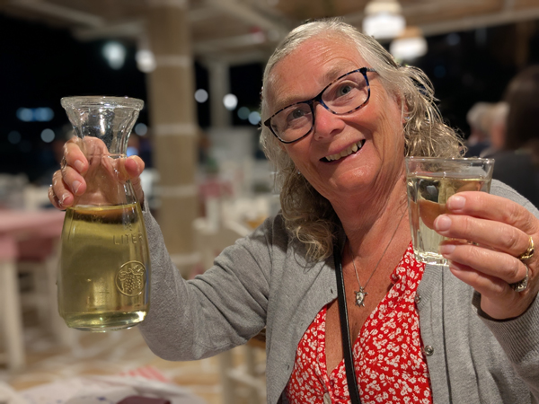
After a day off, we were back on the wine tonight. We had a few on the balcony during which time we booked our flights home for Oct 2nd. We had been waiting to see if I would need to fly home for more cancer treatment but now we know that I don't need anything more done, we know we can stay. We ate at To Steki and had a final drink back at the apartment before bed.
Sunday 21st September This morning, the wind had dropped and I was able to walk all the way round to Agia Marina. Steps completed before midday - the leg is definitely getting better. Roz stayed on the beach and went for a swim.
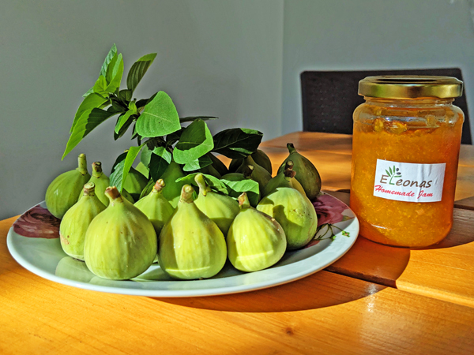
We had been given more pastries of some sort this morning and we ate those for lunch before both going to the beach. We had a slightly later start to todays football - the Sunderland v Aston Villa game was at 16:00 Greek time. Again, we watched the match on the balcony.
It was another night at To Steki with drinks on the balcony before and after our meal. We had complimentary retsina and ouzo tonight but still had a relatively early night.
Monday 22nd September We woke up to a lack of electricity meaning no tea and no toast for breakfast. After eating some of the food we did have left, we both walked up to the big supermarket for more provisions before heading over to the beach for a couple of hours.
A slightly different evening to usual. At 6, we walked round the bay to Agia Marina. We went to see the kittens that are just round the corner from the port and then went for a look round the shops. Not the most successful of shopping trips! The turtles that Roz wanted to buy were either the wrong size or the wrong colour and the t-shirt shop that we wanted to go to was closed.
We had planned to stop at a couple of tavernas on the way back. This went about as well as the shopping trip. I was hoping to stop the one by the windmill in Agia Marina. However, although this looks like a basic taverna when closed during the day, come the evening it changes into quite a formal looking restaurant. We did not have a reservation and I don't think we would be welcome if we were not eating anyway.
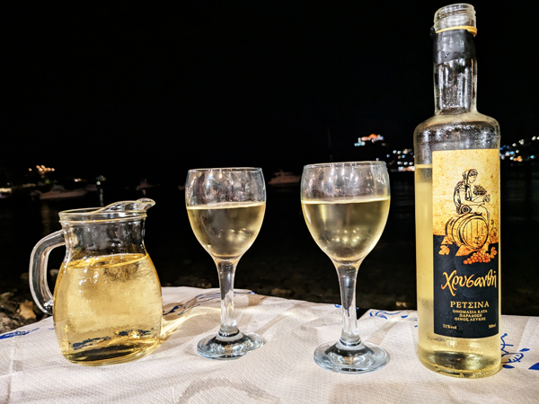
We ended up not stopping until we were back in Alinda. The places we passed were either more restauranty, or just not our sort of bars. The first place we came to that we liked in Alinda was Gláros. This is a cafe/bar type place. We were just going to have a drink there but it we got a table on the beach and ended up having a couple of bottles of retsina with a couple of starters. We continued walking to Argo Taverna where we had our main meals and another litre of wine, also at a very nice table on the beach. We had not been in either of these two places before but both were very good and we would happily go back to both of them.
We had one more drink when we got back to the room (back terrace).
Tuesday 23rd September No electric again when we woke up but it was back on again before we were out of bed. We had breakfast on the balcony as usual and then at 9:30, I went out for a walk.
I walked back round to Agia Marina and then decided to continue walking up the hill to the castle. I managed this without any problems. Three weeks ago, I would have not believed that I would be capable of doing this walk but my leg has improved almost 100% in that time. It was good being back up there and it was a perfect day for the views with relatively little wind. I started walking down the hill on the road past the windmills. I then tried to find the path that missed out going into Pantelli. I got this slightly wrong and ended up walking a bit further than planned but still made it back to Eleona's by about 1pm.
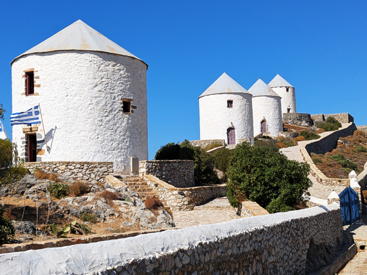
When Roz got back from her swim, we had todays free pies with toasted sandwiches on the balcony. After lunch, we both spent a couple of hours on the beach.
It was back to the usual routine in the evening. Drinks on the balcony followed by a trip to To Steki. For the first time since we had been here, the wind had dropped sufficiently for them to be able to use the tables on the beach. We had seen them setting them up earlier and Roz had reserved one of them for 8:15. Another very good meal with the usual amount of retsina plus ouzos. We had one more drink on the back terrace before bed.
Wednesday 24th September Another similar day. Breakfast on the balcony and then I went for a walk while Roz went to the beach. Today I walked to Gourna Beach, somewhere I had not been to before. All nice enough but probably no real reason to go there again. I walked back via the supermarket, stopping to buy a box of wine to take with us when we leave here. I was back before midday and joined Roz on the beach.
Had a couple more hours on the beach in the afternoon. The evening was a repeat of yesterday apart from one extra bottle of retsina and no ouzo.
Thursday 25th September Once again I went for my walk while Roz went to the beach. Today I walked to Agia Marina and back before joining Roz on the beach. Lunch on the balcony (mini feta cheese pasties) and another couple of hours on the beach in the afternoon.
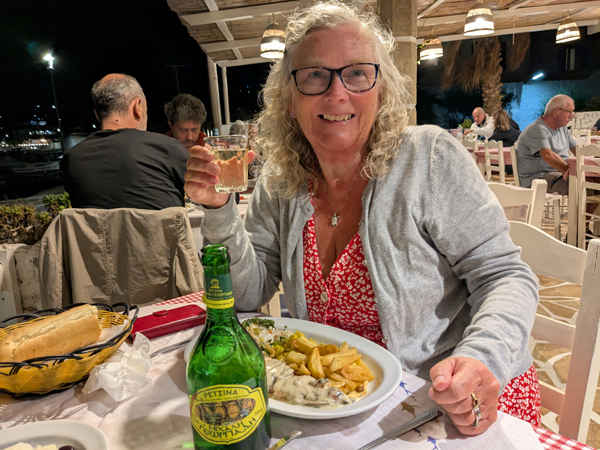
Tonight was our last night here. It is unbelievable how quickly the week has gone. We had drinks on the balcony before our final meal at To Steki. The wind had picked up again today so we could not sit on the beach but once again it was a very enjoyable meal.
Friday 26th September We had to check out of Eleona's at midday today. As usual, after breakfast, I went for a walk and Roz went for a couple of hours on the beach. We paid our bill and Dimitri ordered us a taxi. It was sad to be leaving but it was not quite as emotional a departure as it was last year!
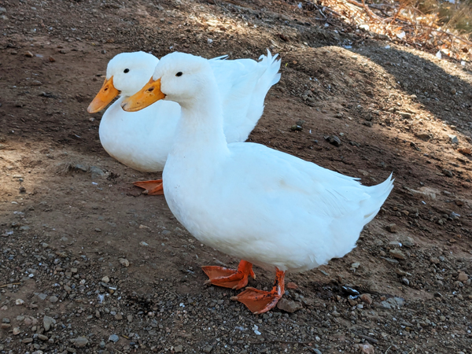
The taxi took us to Tony's Beach Resort where we had a room booked for four nights. We were supposed to have come here at in the first week of the holiday but had had to cancel due to my hospital appointments. We were able to check into our room as soon as we arrived and have a room on the first floor of the middle block. Although slightly further back from the sea, these rooms probably have slightly better balconies than the rooms in the block where we usually stay.
After unpacking, we walked to the supermarket to buy things for the next few days. We had lunch on the balcony before heading to the beach. At 4ish, I walked up the hill to book a table for tonight before going back to the beach for a quick swim. Roz swam almost to Pantelli.
We had a few drinks on the balcony and walked up to Dimitri's just after 8. The restaurant was not that full but most of his waiters have returned to university so Dimitri was having to serve tables instead of just sitting around drinking beer. We had probably the best table for two people with excellent views of the bay. As expected, the food was superb and it was a very enjoyable meal. Roz went straight to bed when we got back. I had one more on the balcony but it was a relatively early night.
Saturday 27th September We were awake early enough to watch the sunrise from the balcony. After we had taken our photos and had our cups of tea, we walked into Lakki and had breakfast at Mike's. On the way back we had another stop at the supermarket to buy food for tonight. We had an hour or so at the beach before lunch.
Neither Swansea or Sunderland had 3pm kick-offs today - Swansea played Millwall at 2:30 local time while Forest v Sunderland was 7:30. This meant a bit of a change to our usual routine. We watched the Swansea game, then had showers and walked to Agia Marina. We wanted to go to the t-shirt shop again after our unsuccessful shopping trip on Monday. We had a half litre of retsina at a Diamanti Cafe while we we waited for it to open at 6:30. Today, Roz was able to buy the t-shirt that she wanted.
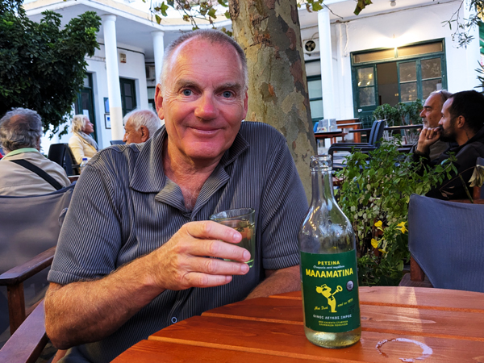
Once we had done this, we walked back up the hill and stopped for another retsina at Platanos Café. We got back to Tony's 5 - 10 minutes after the Sunderland game had kicked off. We had already decided that it would be too late to go out and eat by the time this game finished so we had bought food this morning to eat at half time. Once the game finished, we joined the J-Team video call for a couple of hours before bed.
Sunday 28th September We had drunk a bit more last night than usual and were both feeling the effects of it his morning. We were quite late getting up and having breakfast. I decided I would go out for a walk and went down to Lakki again. I bought a few things that we were getting low on and completed my steps by the time I got back to Tony's. Roz went to the beach but did not go for a swim.
We both went to the beach after lunch. It is definitely starting to feel like the end of the season here. Tony's is quieter today that I can ever remember it. The temperature is definitely dropping. It is still just about warm enough to lie in the sun but it if you are not in the sun, it is starting to get quite cold. Roz did manage to do her swim but I was back in the room by about 4:30.
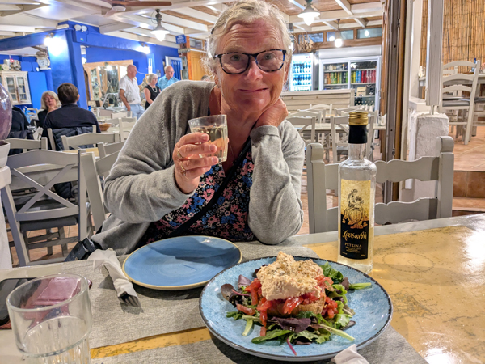
It was back to Dimitri's again tonight after our balcony drinks. Things were quieter here tonight as well and there was an extra waiter so the service was a bit quicker than two nights ago. Excellent meals as always here.
Monday 29th September We were up a bit earlier this morning. We had planned to walk up to the castle today and it was ideal weather for it with quite a lot of cloud. We set off at about 8:30 and walked up to Platanos stopping to buy breakfast from Mike's on the way. There was nowhere in the square suitable to stop and eat so we started walking up the steps until we got to the church and had our breakfast there. We continued walking and got to the castle entrance at 9:20... and found out that it does not open until 10.
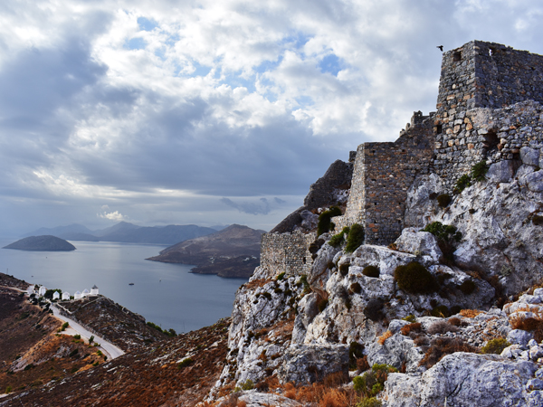
We could not be bothered to wait so walked round and took a few photos from the outside. As we were about to start walking down, the priest turned up with the keys and opened half an hour early. This meant that not only could we get in but there were not too many other people around. By the time we got to the top of the castle, it started to rain and we had to shelter. It was only a brief shower and after a few minutes we could carry on walking round.
We spent about 40 minutes in the castle before walking down past the windmills to Pantelli. We bought a few things from the shop there before walking back to Tony's.
We had lunch on the balcony and then spent the rest of the afternoon in the room. It was not really warm enough for the beach and there were quite heavy showers every half hour or so. They did not last long but it was not the weather for being at the beach.
The rain had stopped by about 6:30 so we were able to have our evening drinks on the balcony. We ate at Dimitris again and had almost exactly the same meals as yesterday. Excellent food again together with four bottles of retsina. We had a final drink on the balcony before bed.
Tuesday 30th September Our final morning on Leros. We were just about up in time to see the end of the sunrise before breakfast on the balcony. I went out for a walk again straight after eating. I ended up walking back up to the castle via Agia Marina. I had not planned to go that far but once in Agia Marina, I thought I may as well. I did not go into the castle today but walked straight back down via Pantelli.
Back at Tony's I booked a taxi for 1:30 and spent the rest of the morning in the room. We checked out at midday and, after hearing Nico's plans for the winter, went back to sit by the beach while waiting for the taxi. The taxi came on time and dropped us outside the bakery in Agia Marina. We had lunch there before walking to the port to wait for the Dodekanisos Express.
The boat was due in at 14:20. We already knew it was running about 30 minutes late and it eventually left at about 15:00. It was an uneventful journey and we arrived in Kos about 45 minutes late at 16:30.
We had planned to get a taxi to the hotel that we had booked. However, all the taxis in the port were pre-booked and there were none to be seen outside so we had a walk of about 45 minutes to get to the Smaragdi Hotel. Walking round the port was not the greatest of experiences due to the number of people around. All a bit of a culture shock after the peaceful islands of the last few weeks. The crowds did die down as we got further away from the port and the hotel was in quite a quiet area.
We were shown to our room which is very nice although the balcony does not have quite the same view as some we have had on this trip. After I had finished my book and we had both had showers, we went out to eat.
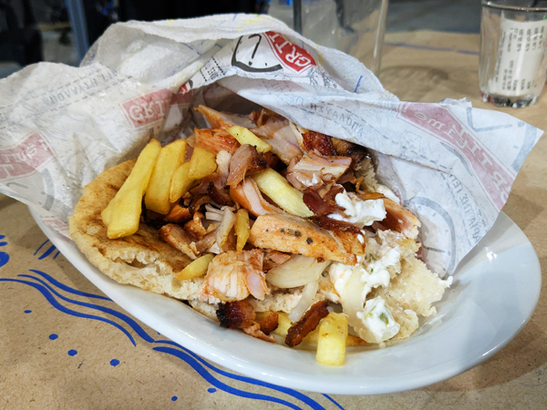
We were both worn out after the last ten days and were in need of a night off alcohol again. We walked until we found a place serving gyros and both had gyros wraps before walking back again. Not the culinary highlight of the holiday but very enjoyable nevertheless. We were back in the room by 9ish. I was planning on watching the Blackburn v Swansea game but we were both asleep before it kicked off.
Wednesday 1st October We were up relatively early and in the breakfast room when it opened at 8:00. This was the first time on this holiday that we have had breakfast included and it was a very good selection.
Once we had eaten, we walked back into Kos Old Town to do a bit of sight-seeing. There was nothing we were desperate to see but we had a list of the top six sights and thought we may as well go and look at them.
It was about a 30 minute walk back to the port area and we headed up to the first sight - Hippocrates Plane Tree. This seems to feature quite highly on all the lists of things to see here but was a bit crap really. The bridge to Neratzia Castle was by the tree so we headed in there next. This is the large castle that dominates the port area and was a lot more interesting than the tree.
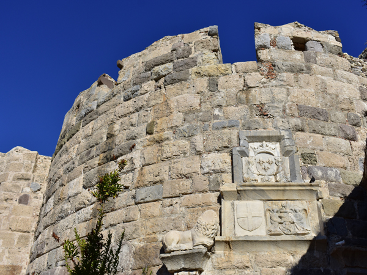
After walking round there for a while, we walked to the Ancient Agora and then on to the Roman Odeon. The Odeon was the most complete of the ruins we had seen. We had given up on sights by this time but were walking past the "Western Archaeological Zone so had a quick look round there before walking back down to the port. We bought our fridge magnets and walked back to the hotel.
Nothing we had seen had been really spectacular or memorable but it was a nice enough walk and there were not too many other people around. It would appear that the majority of the islands guests were more interested in heading out on "pirate ships" for the day!
We were back at the hotel by 11ish and spent an hour or so by the pool before lunch. It was just about warm enough for lunch on the balcony. It has been warmer the last couple of days but still very windy and the balcony is in the shade. We had another couple of hours by the pool in the afternoon.
It was too cold to sit on our balcony by 6:45 so we had our pre-going out drinks sat in the room. We just had one drink before going for a couple of drinks at George's Garden bar. We ate at Angelina's House. The food here was not as good as at a lot of places we have eaten at in the last few weeks but it was a nice place with good service and cheap wine.
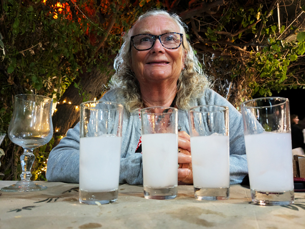
We got through a couple of litres of wine and a few ouzos before returning to the hotel for our welcome drinks. A very enjoyable night out to end the trip.
Thursday 2nd October After breakfast, I walked to the port area and back. We checked out at 11:30 and had an hour by the pool before our taxi turned up to take us to the airport.
The journey home was fairly smooth. Our Ryanair flight left just about on time and landed in Stansted at 17:15. By 18:00 we were on a train into London. We got the tube from Tottenham Hale to Vauxhall and another train to Clapham Junction. We were back in Basingstoke just after 20:00. We were both totally worn out by this stage and could not be bothered to wait for the bus so got a taxi back to Kingsclere.